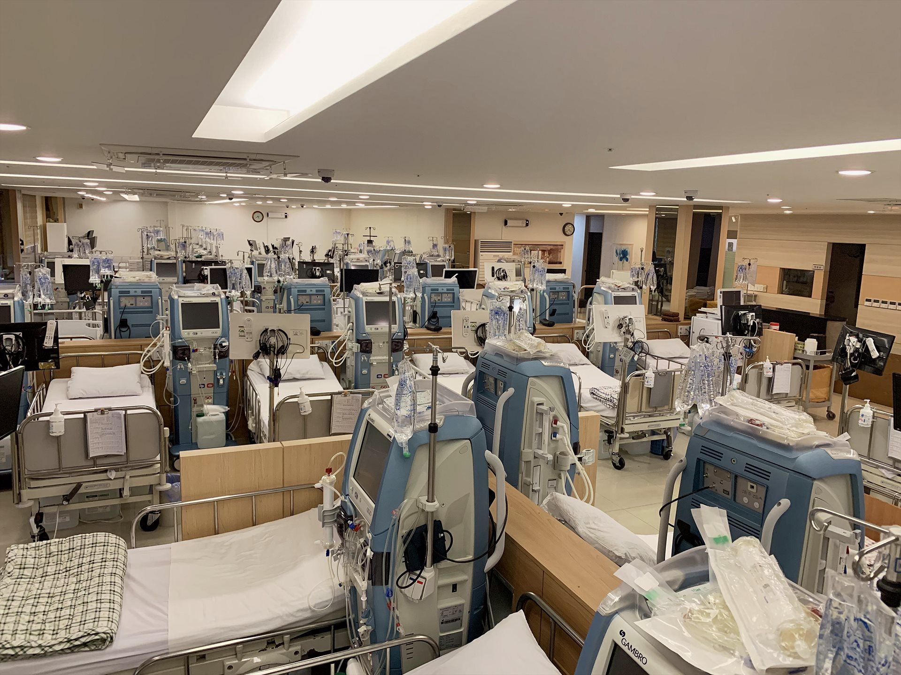
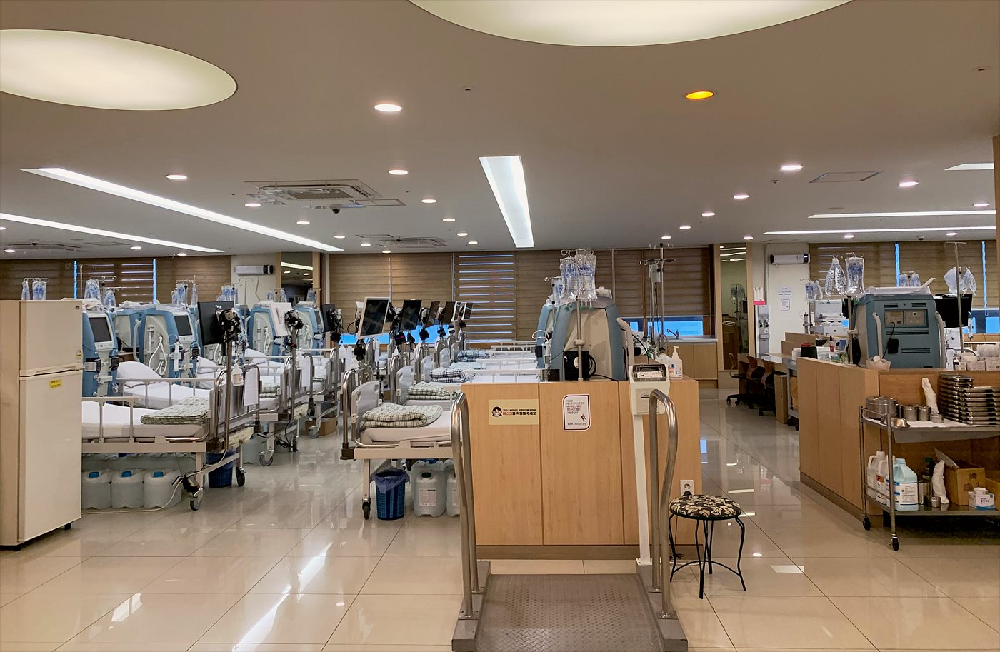

일산서구 주엽동 · 주엽역 인근
투석 치료에도
투석 치료에도
주치의가
필요합니다
노승현내과의원은 2003년부터 일산에서 혈액투석을 이어온 내과입니다.
대학교수 출신 원장이 투석 처방부터 콩팥·혈압·당뇨 관리까지, 한 사람의 환자를 오래 깊이 봅니다.

노승현내과의원 인공신장실2003년부터 22년 · 투석 전문 진료
2003년 개원
혈액투석 인공신장실
고혈압 · 당뇨 통합 관리
건강검진 · 내시경
주엽역 인근

2003년 개원 · 투석 전문 진료일산서구 주엽동 · 주엽역 인근
Why 노승현내과
투석 환자를 오래 봐온 의원이
투석 환자를 오래 봐온 의원이
동네에 있다는 것.
혈액투석은 주 2~3회, 회당 4시간을 몇 년씩 이어가는 치료입니다.
노승현내과의원은 2003년부터 일산에서 투석 환자를 진료하며
전문성 · 접근성 · 편안함을 기준으로 인공신장실을 운영해 왔습니다.
- 신장 질환의 전문화된 치료 — 20여 년의 수련과 대학교수 경력을 거친 원장이 투석 처방과 신장 질환 진료를 직접 담당합니다.
- 성인병 통합 관리 — 콩팥을 상하게 하는 당뇨·고혈압·고지혈증을 투석·신장 진료와 한 곳에서 함께 관리합니다.
- 정확한 검진과 적절한 조치 — 원내 검사실에서 혈액·소변검사를 진행하고 결과에 따라 바로 진료로 연결합니다.
- 내 집같이 편안한 투석 환경 — 주엽역 인근 접근성 좋은 위치에서, 오래 다녀도 부담 없는 투석실을 지향합니다.
진료 안내
투석부터 검진까지, 콩팥을 지키는 진료
만성콩팥병의 상당수는 당뇨와 고혈압에서 시작됩니다. 노승현내과의원은 투석 전 단계의 콩팥 관리부터 투석 치료까지 한 의료진이 이어서 봅니다.
지역별 안내
이 지역에서 노승현내과 인공신장실을 찾으신다면
주 2~3회 다녀야 하는 투석은 거리가 치료의 일부입니다. 생활권별로 오시는 길과 진료 안내를 정리했습니다.
진료시간
오시는길 자세히 보기
진료시간과 문의
투석 일정 상담과 진료 예약 문의는 전화로 받습니다.
투석 환자분은 내원 전 일정을 확인해 주세요.
| 월 · 화 · 수 · 금 | 09:00 – 18:00 |
|---|---|
| 목요일 | 09:00 – 12:30 (오전진료) |
| 토요일 | 09:00 – 12:30 |
| 점심시간 | 12:30 – 13:30 |
| 일요일 · 공휴일 | 휴진 |

진료문의 031-924-0875경기 고양시 일산서구 중앙로 1413, 동영빌딩 6층